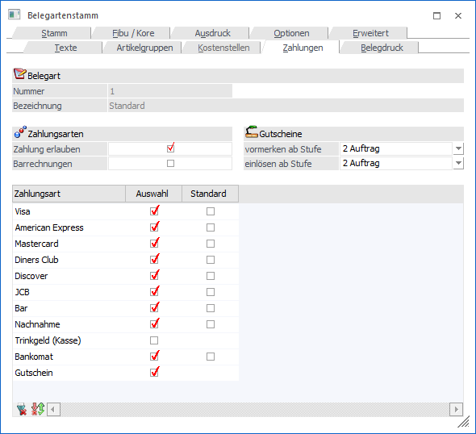
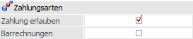
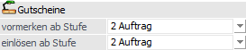
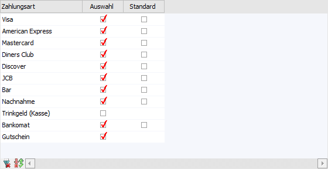
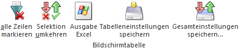

In diesem Register kann definiert werden, ob bei der Erfassung eines Beleges eine Zahlung mit erfasst werden kann.

Im oberen Teil des Fensters wird die Belegart angezeigt, welche gerade bearbeitet wird (Felder "Nummer" und "Bezeichnung").
Zahlungsarten

Ø Zahlungen erlauben
Ist die Option "Zahlung erlauben" aktiv, so kann bei dieser Belegart in den Stufen "Auftrag", "Lieferschein" und "Faktura" unmittelbar nach dem Rechnen der Faktura eine Zahlung durchgeführt werden. Als Zahlungsmittelkonto für die Übergabe in die Finanzbuchhaltung wird jenes genommen, das in der verwendeten Zahlungsart hinterlegt wurde (siehe Kapitel Zahlungsartenstamm).
Ø Barrechnungen
Wird die Option "Barrechnungen" aktiviert, so kann mit dieser Belegart eine "Barfaktura" erfasst werden. Zudem stehen dann ausschließlich jene Zahlungsarten zur Verfügung, welche im Zahlungsartenstamm entweder die Option "1 - Bar-Bargeld" oder "2 - Bar-Kartenzahlung" hinterlegt haben.
Gutscheine

Ø vormerken ab Stufe
In dieser Auswahlliste stehen die Belegstufen Auftrag bis Faktura zur Verfügung. Je nachdem welche Belegstufe hier gewählt wurde, ist es möglich einen Gutschein bei einem Beleg vorzumerken. Zu diesem Zeitpunkt gilt der zugewiesene Gutschein als "Vorgemerkt" und kann ich keinen anderen Belegen mehr verwendet werden.
Ø einlösen ab Stufe
In dieser Auswahlliste stehen die Belegstufen Auftrag bis Faktura zur Verfügung. Ab der hinterlegten Belegstufe wird der Gutschein tatsächlich eingelöst und storniert bzw. die FIBU-Buchungen durchgeführt und gilt als "eingelöst". Ab dieser Stufe wird der eingelöste Gutscheinbetrag ebenfalls in das Zahlungsfenster mit der Gutschein-Zahlungsart übergeben.
Hinweis
Wenn die Belegstufe unter "vormerken ab Stufe" und "einlösen ab Stufe" ident ist, wird der Gutschein direkt eingelöst und nicht noch zusätzlich vorgemerkt.
Tabelle "Zahlungsarten"

In der Tabelle werden alle vorhandenen Zahlungsarten (je nach Belegart nur die Einkaufs- bzw. Verkaufszahlungsarten) angezeigt.
Ø Auswahl
Mit der Checkbox Auswahl können die für diese Belegart erlaubten Zahlungsarten definiert werden. Erhält eine Zahlungsart kein Häkchen, so kann diese bei der Zahlung nicht verwendet werden.
Ø Standard
Mit dieser Checkbox kann die Standardzahlungsart festgelegt werden. Diese Checkbox ist nur bei erlaubten Zahlungsarten vorhanden und nur so lange noch keine (andere) Standardbelegart definiert wurde. Wurde eine Zahlungsart als Standard definiert, so wird bei der Erfassung einer Faktura automatisch in das Register Zahlung gewechselt, in dem die Zahlungsart vorgeschlagen wird.
Hinweis
Wurde in der verwendeten Zahlungskondition ebenfalls die Checkbox "Zahlung erlauben" aktiviert, so wird bei der Erfassung einer Faktura ebenfalls automatisch in das Register Zahlung gewechselt, auch wenn in der Belegart keine Standardzahlungsart hinterlegt wurde (nähere Informationen entnehmen Sie bitte dem Kapitel "Zahlungskonditionen" im WinLine Allgemein Handbuch).
Tabellenbuttons

Ø alle Zeilen markieren
Mit diesem Button werden alle vorhandenen Zahlungsarten aktiviert.
Ø Selektion umkehren
Mit dem Button "Selektion umkehren" werden die selektierten Zahlungsarten deaktiviert und die nicht selektierten Zahlungsarten aktiviert.
Ø Ausgabe Excel
Durch Anwahl des Buttons "Ausgabe Excel" wird der Inhalt der Tabelle an Microsoft Excel übergeben.
Ø Tabelleneinstellungen speichern
Die Spalten einer Tabelle können grundsätzlich an beliebige Positionen verschoben, bzw. in der Breite entsprechend angepasst werden. Durch Anwahl des Buttons "Tabelleneinstellungen speichern" werden die Einstellungen benutzerspezifisch gespeichert und bei dem nächsten Aufruf des Programmpunktes wieder vorgeschlagen.
Ø Gesamteinstellungen speichern
Im Gegensatz zu "Tabelleneinstellungen speichern" können mit "Gesamteinstellungen speichern" mehrere Tabellenaufbauten gespeichert und nach Wunsch geladen werden. Zusätzlich werden Sonderfunktionen der Tabelle (z.B. "Spalte gruppieren") ebenfalls bei der Speicherung bedacht.